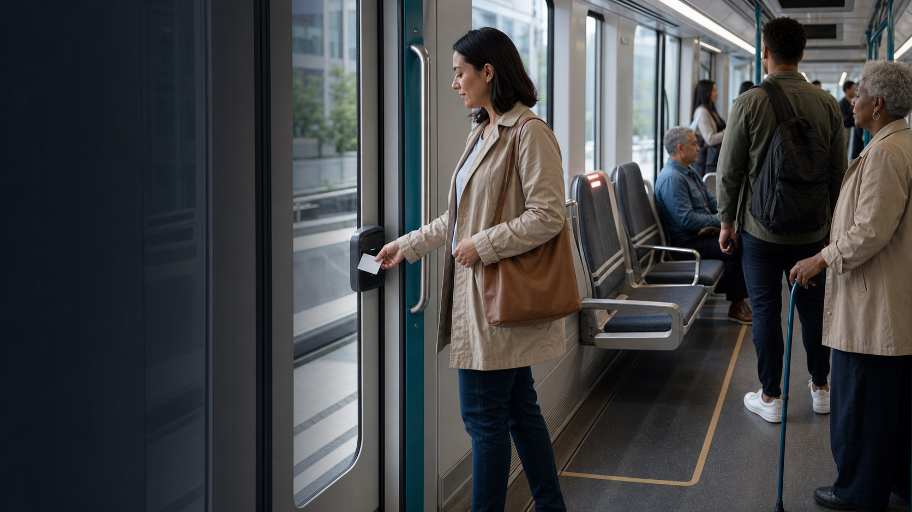

Mobilidade que percebe. Sem expor.
Prioriza
Um sinal simples para quem precisa de um lugar.
NFC, sensores e luz conectados para transformar assentos prioritários em uma rede de cuidado dentro do transporte público.
O desafio
Nem toda necessidade é visível.
Em um vagão cheio, pedir um assento pode significar explicar uma condição pessoal em voz alta. O Prioriza cria outra possibilidade: a própria pessoa aciona um sinal discreto e encontra onde há disponibilidade.
Demonstração
Do cartão ao assento, em segundos.
A leitura NFC inicia uma busca local. O primeiro assento livre recebe um sinal luminoso; ao detectar ocupação, a luz se apaga.
Sistema pronto. Dois assentos disponíveis.
-
01
A pessoa sinaliza
Um cartão ou chaveiro NFC inicia o pedido de forma intencional.
-
02
A rede localiza
O servidor identifica quais assentos estão conectados e livres.
-
03
A luz orienta
O assento disponível acende e apaga assim que é ocupado.
A inspiração
Uma luz abriu uma conversa na Coreia do Sul.
Em 2016, o Pink Light usou beacons para acionar luzes próximas aos assentos prioritários. O piloto mostrou o potencial da tecnologia e também revelou uma pergunta importante: como ajudar sem transformar a pessoa em centro das atenções?
O Prioriza parte dessa experiência e propõe um gesto voluntário por NFC, com processamento local e foco na disponibilidade do assento, não na condição do passageiro.
Ler a reportagem da BBCCFA NFC · prova de conceito
Já existe um sistema conversando.
O protótipo conecta hardware acessível e software aberto para validar o fluxo completo dentro de uma rede local.
- Identificação
- ESP32 + leitor PN532
- Orquestração
- Servidor TCP/IP local
- Disponibilidade
- Sensor por assento + LED
Próxima parada
Vamos testar uma mobilidade mais atenta?
O Prioriza está pronto para sair da bancada e aprender com um ambiente real. Um projeto-piloto pode adaptar o fluxo ao veículo, à operação e às pessoas que usam o transporte todos os dias.